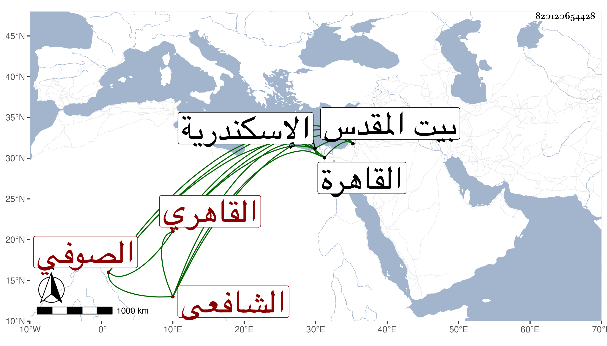

0902Sakhawi.DawLamic.ITO20230111-ara1.EIS1600.820120654428
Biography ID: 820120654428
أحمد بن أبي بكر بن أحمد الشهاب أبو العباس ثم القاهري الشافعي الصوفي ويعرف بابن الزاهد . ولد في العشر الأخير من رمضان سنة أربع وأربعين وسبعمائة وحج غير مرة منها في سنة أربع وستين وجاور سنة خمس فسمع بها على العفيف اليافعي أشياء من تصانيفه ومروياته ثم سنة ثلاث وتسعين وسمع بها على ابن صديق والشهاب بن الناصح والشمس محمد بن قاسم بن محمد بن مخلوف الصقلي المالكي وأبي الحسن علي بن أحمد العقيلي المالكي ثم سنة إحدى وثمانمائة وسمع فيها على الأبناسي ودخل بيت المقدس في خلال ذلك فسمع به في رمضان سنة خمس وثمانين وسبعمائة على البدر أبي عبد الله محمود بن علي العجلوني والاسكندرية بعد ذلك فسمع بها على أبي عبد الله محمد بن يوسف الأنصاري المالكي المسلسلات بل سمع بالقاهرة سنة ست وستين على المحب الخلاطي السنن للدارقطني وعلى الجمال بن نباتة السيرة لابن هشام وبعد ذلك على ابن الفصيح وابن أبي المجد وآخرين ، وأجاز لجماعة منهم التقي الشمني وذلك في سنة ست وثمانمائة ، وترجمته بأبسط مما هنا في تاريخي الكبير ورأيت من أرخه سنة تسع عشرة رحمه الله .
